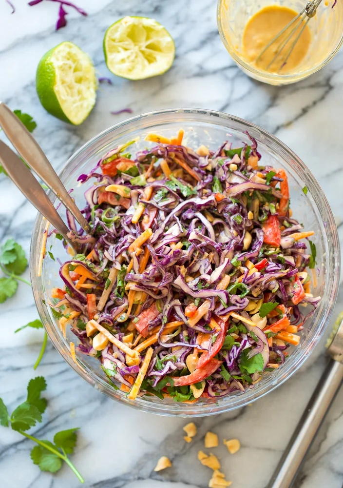

Creamy Peanut Slaw

Stop serving the same old soggy sadness and try this slawsome side dish
Mixing peanut butter with cabbage might sound messed up but it's delicious. This side dish works well with noodles or similar mains. You could even just eat it solo.
Ingredients
Peanut Dressing
- 3 tablespoons peanut butter
- 2 tablespoons warm water
- 3 tablespoons rice vinegar
- 2 tablespoons lime juice
- 1 tablespoon minced fresh ginger
- 1 1/2 teaspoons Sriracha or your favorite Asian-style hot sauce
- 1/2 teaspoon soy sauce or tamari
Slaw
- 3 cups thinly sliced red cabbage
- 3 cups thinly sliced green gabbage
- 1 carrot, cut into think matchsticks
- 1/3 cup thinly sliced green onions